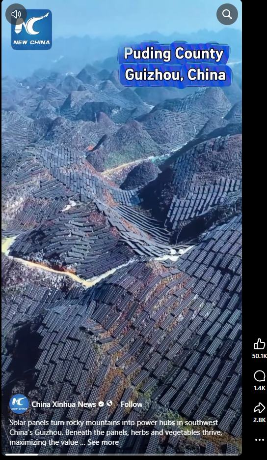

Article #012 · November 2026
Turning Underused American Land into Clean Energy
What solar installations on rugged terrain in China can teach the United States.

By Willis Butts · Terra Nova Development, Inc.
A Mountain Covered in Solar Panels
An image attributed to Xinhua shows extensive solar installations across steep terrain in Puding County, Guizhou, China. The striking lesson is not that mountainous land is universally useless, but that some difficult-to-develop sites can support energy production. The image alone cannot establish the project’s output, costs or environmental effects.
An American Opportunity
The United States has a vast variety of sites that might be suitable for solar energy: disturbed mine lands, closed landfills, industrial brownfields, certain low-productivity parcels, reservoirs, rooftops and parking lots. Carefully selected hillsides may also work. These sites can generate electricity without necessarily displacing productive farmland or new housing.
Not Every Mountain Is a Solar Farm
Steep slopes can raise construction costs, complicate maintenance and increase erosion or landslide risks. Remote locations may require expensive transmission lines. Wildlife habitat, water runoff, cultural resources and viewsheds also matter. The goal should be to find appropriate land—not to blanket every undeveloped landscape with panels.
How the System Would Work
Solar photovoltaic modules convert sunlight into electricity. Inverters connect the output to local grids, and batteries or other flexible resources can help shift supply toward evening demand. Utilities must study interconnection capacity and grid upgrades. Where suitable, vegetation management and compatible grazing or agriculture can provide additional benefits.
A National Site-First Strategy
Federal, state, tribal and local agencies could map disturbed and underused lands, screening for sunlight, slopes, habitat sensitivity, transmission access and community support. Competitive development could prioritize projects with the lowest total cost and strongest environmental safeguards. Local residents should share in benefits through jobs, lower bills or community ownership where feasible.
Economic and Social Benefits
Well-sited solar projects can diversify energy supply, create construction and maintenance work, produce lease revenue and expand the tax base. Benefits depend on financing, grid constraints and local market conditions. Solar generation varies with weather and time of day, so a reliable system also needs transmission, storage and complementary energy resources.
The Terra Nova Perspective
The broader principle is to recognize overlooked capacity and organize it for public benefit. Land that is unsuitable for conventional development may still have value as a source of clean power. With engineering discipline, environmental stewardship and fair access, we can turn some of that potential into affordable energy for communities.
A Practical First Step
Choose a pilot site such as a retired landfill or reclaimed mine. Commission a feasibility study, environmental assessment, grid interconnection review and transparent financial model. Compare its economics with rooftops, parking canopies and conventional ground-mounted solar. Build only where the evidence supports it.
Conclusion
Abundance is not just what we possess; it is what we learn to use wisely. The opportunity is to turn suitable overlooked places into power for people—without sacrificing the landscapes and ecosystems we also depend on. There is no them. There is only us.